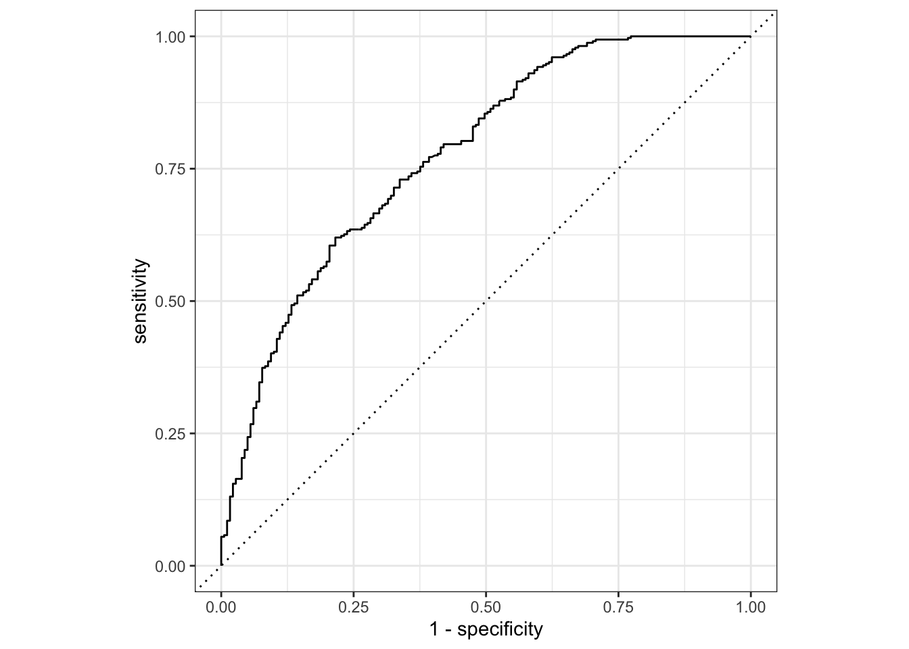
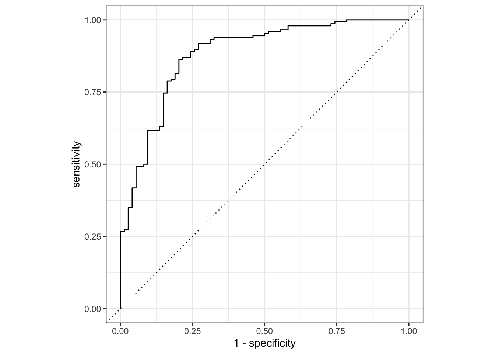
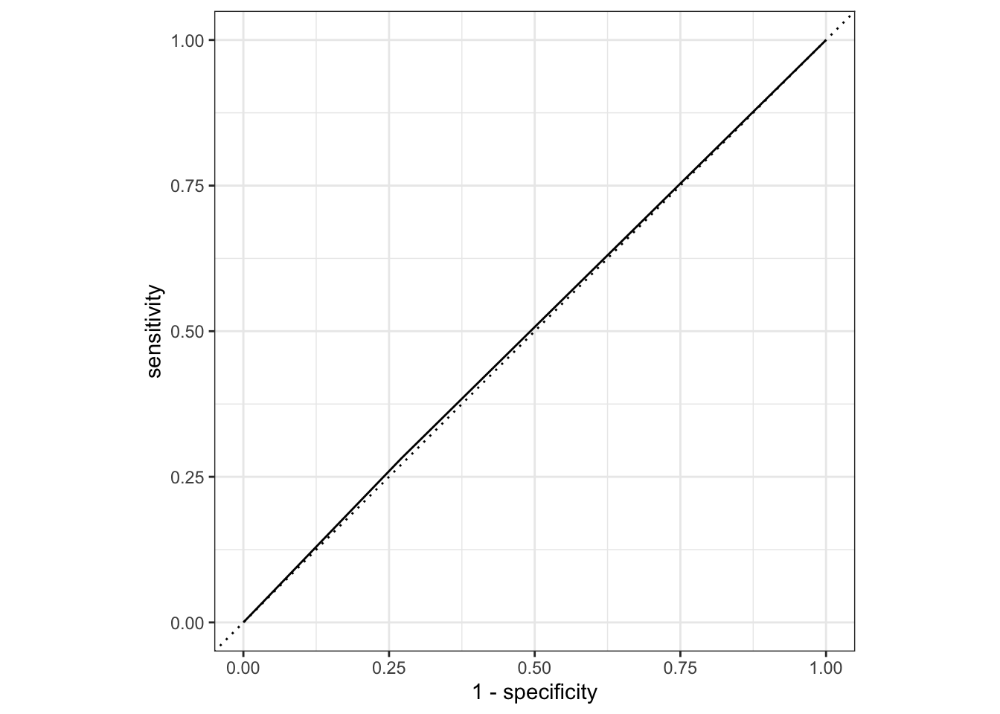

<!DOCTYPE html>
<html xmlns="http://www.w3.org/1999/xhtml" lang="en" xml:lang="en"><head>

<meta charset="utf-8">
<meta name="generator" content="quarto-1.2.313">

<meta name="viewport" content="width=device-width, initial-scale=1.0, user-scalable=yes">


<title>My Data Analysis Portfolio - Flu Analysis - Model Analysis &amp; Evaluation</title>
<style>
code{white-space: pre-wrap;}
span.smallcaps{font-variant: small-caps;}
div.columns{display: flex; gap: min(4vw, 1.5em);}
div.column{flex: auto; overflow-x: auto;}
div.hanging-indent{margin-left: 1.5em; text-indent: -1.5em;}
ul.task-list{list-style: none;}
ul.task-list li input[type="checkbox"] {
  width: 0.8em;
  margin: 0 0.8em 0.2em -1.6em;
  vertical-align: middle;
}
pre > code.sourceCode { white-space: pre; position: relative; }
pre > code.sourceCode > span { display: inline-block; line-height: 1.25; }
pre > code.sourceCode > span:empty { height: 1.2em; }
.sourceCode { overflow: visible; }
code.sourceCode > span { color: inherit; text-decoration: inherit; }
div.sourceCode { margin: 1em 0; }
pre.sourceCode { margin: 0; }
@media screen {
div.sourceCode { overflow: auto; }
}
@media print {
pre > code.sourceCode { white-space: pre-wrap; }
pre > code.sourceCode > span { text-indent: -5em; padding-left: 5em; }
}
pre.numberSource code
  { counter-reset: source-line 0; }
pre.numberSource code > span
  { position: relative; left: -4em; counter-increment: source-line; }
pre.numberSource code > span > a:first-child::before
  { content: counter(source-line);
    position: relative; left: -1em; text-align: right; vertical-align: baseline;
    border: none; display: inline-block;
    -webkit-touch-callout: none; -webkit-user-select: none;
    -khtml-user-select: none; -moz-user-select: none;
    -ms-user-select: none; user-select: none;
    padding: 0 4px; width: 4em;
    color: #aaaaaa;
  }
pre.numberSource { margin-left: 3em; border-left: 1px solid #aaaaaa;  padding-left: 4px; }
div.sourceCode
  {   }
@media screen {
pre > code.sourceCode > span > a:first-child::before { text-decoration: underline; }
}
code span.al { color: #ff0000; font-weight: bold; } /* Alert */
code span.an { color: #60a0b0; font-weight: bold; font-style: italic; } /* Annotation */
code span.at { color: #7d9029; } /* Attribute */
code span.bn { color: #40a070; } /* BaseN */
code span.bu { color: #008000; } /* BuiltIn */
code span.cf { color: #007020; font-weight: bold; } /* ControlFlow */
code span.ch { color: #4070a0; } /* Char */
code span.cn { color: #880000; } /* Constant */
code span.co { color: #60a0b0; font-style: italic; } /* Comment */
code span.cv { color: #60a0b0; font-weight: bold; font-style: italic; } /* CommentVar */
code span.do { color: #ba2121; font-style: italic; } /* Documentation */
code span.dt { color: #902000; } /* DataType */
code span.dv { color: #40a070; } /* DecVal */
code span.er { color: #ff0000; font-weight: bold; } /* Error */
code span.ex { } /* Extension */
code span.fl { color: #40a070; } /* Float */
code span.fu { color: #06287e; } /* Function */
code span.im { color: #008000; font-weight: bold; } /* Import */
code span.in { color: #60a0b0; font-weight: bold; font-style: italic; } /* Information */
code span.kw { color: #007020; font-weight: bold; } /* Keyword */
code span.op { color: #666666; } /* Operator */
code span.ot { color: #007020; } /* Other */
code span.pp { color: #bc7a00; } /* Preprocessor */
code span.sc { color: #4070a0; } /* SpecialChar */
code span.ss { color: #bb6688; } /* SpecialString */
code span.st { color: #4070a0; } /* String */
code span.va { color: #19177c; } /* Variable */
code span.vs { color: #4070a0; } /* VerbatimString */
code span.wa { color: #60a0b0; font-weight: bold; font-style: italic; } /* Warning */
</style>


<script src="../../site_libs/quarto-nav/quarto-nav.js"></script>
<script src="../../site_libs/quarto-nav/headroom.min.js"></script>
<script src="../../site_libs/clipboard/clipboard.min.js"></script>
<script src="../../site_libs/quarto-search/autocomplete.umd.js"></script>
<script src="../../site_libs/quarto-search/fuse.min.js"></script>
<script src="../../site_libs/quarto-search/quarto-search.js"></script>
<meta name="quarto:offset" content="../../">
<script src="../../site_libs/quarto-html/quarto.js"></script>
<script src="../../site_libs/quarto-html/popper.min.js"></script>
<script src="../../site_libs/quarto-html/tippy.umd.min.js"></script>
<script src="../../site_libs/quarto-html/anchor.min.js"></script>
<link href="../../site_libs/quarto-html/tippy.css" rel="stylesheet">
<link href="../../site_libs/quarto-html/quarto-syntax-highlighting.css" rel="stylesheet" id="quarto-text-highlighting-styles">
<script src="../../site_libs/bootstrap/bootstrap.min.js"></script>
<link href="../../site_libs/bootstrap/bootstrap-icons.css" rel="stylesheet">
<link href="../../site_libs/bootstrap/bootstrap.min.css" rel="stylesheet" id="quarto-bootstrap" data-mode="light">
<script id="quarto-search-options" type="application/json">{
  "location": "navbar",
  "copy-button": false,
  "collapse-after": 3,
  "panel-placement": "end",
  "type": "overlay",
  "limit": 20,
  "language": {
    "search-no-results-text": "No results",
    "search-matching-documents-text": "matching documents",
    "search-copy-link-title": "Copy link to search",
    "search-hide-matches-text": "Hide additional matches",
    "search-more-match-text": "more match in this document",
    "search-more-matches-text": "more matches in this document",
    "search-clear-button-title": "Clear",
    "search-detached-cancel-button-title": "Cancel",
    "search-submit-button-title": "Submit"
  }
}</script>


<link rel="stylesheet" href="../../styles.css">
</head>

<body class="nav-fixed fullcontent">

<div id="quarto-search-results"></div>
  <header id="quarto-header" class="headroom fixed-top">
    <nav class="navbar navbar-expand-lg navbar-dark ">
      <div class="navbar-container container-fluid">
      <div class="navbar-brand-container">
    <a class="navbar-brand" href="../../index.html">
    <span class="navbar-title">My Data Analysis Portfolio</span>
    </a>
  </div>
          <button class="navbar-toggler" type="button" data-bs-toggle="collapse" data-bs-target="#navbarCollapse" aria-controls="navbarCollapse" aria-expanded="false" aria-label="Toggle navigation" onclick="if (window.quartoToggleHeadroom) { window.quartoToggleHeadroom(); }">
  <span class="navbar-toggler-icon"></span>
</button>
          <div class="collapse navbar-collapse" id="navbarCollapse">
            <ul class="navbar-nav navbar-nav-scroll me-auto">
  <li class="nav-item">
    <a class="nav-link" href="../.././aboutme.html">
 <span class="menu-text">About Me</span></a>
  </li>  
  <li class="nav-item dropdown ">
    <a class="nav-link dropdown-toggle" href="#" id="nav-menu-projects" role="button" data-bs-toggle="dropdown" aria-expanded="false">
 <span class="menu-text">Projects</span>
    </a>
    <ul class="dropdown-menu" aria-labelledby="nav-menu-projects">    
        <li>
    <a class="dropdown-item" href="../.././coding_exercise.html">
 <span class="dropdown-text">R Coding Exercise</span></a>
  </li>  
        <li>
    <a class="dropdown-item" href="../.././visualization_exercise.html">
 <span class="dropdown-text">Visualization Exercise</span></a>
  </li>  
        <li>
    <a class="dropdown-item" href="../.././dataanalysis_exercise.html">
 <span class="dropdown-text">Data Analysis Exercise</span></a>
  </li>  
        <li>
    <a class="dropdown-item" href="../.././tidytuesday_exercise.html">
 <span class="dropdown-text">Tidy Tuesday Exercise</span></a>
  </li>  
    </ul>
  </li>
  <li class="nav-item dropdown ">
    <a class="nav-link dropdown-toggle" href="#" id="nav-menu-flu-analysis" role="button" data-bs-toggle="dropdown" aria-expanded="false">
 <span class="menu-text">Flu Analysis</span>
    </a>
    <ul class="dropdown-menu" aria-labelledby="nav-menu-flu-analysis">    
        <li>
    <a class="dropdown-item" href="../.././fluanalysis/code/wrangling.html">
 <span class="dropdown-text">Wrangling</span></a>
  </li>  
        <li>
    <a class="dropdown-item" href="../.././fluanalysis/code/exploring.html">
 <span class="dropdown-text">Exploration</span></a>
  </li>  
        <li>
    <a class="dropdown-item" href="../.././fluanalysis/code/fitting.html">
 <span class="dropdown-text">Fitting</span></a>
  </li>  
        <li>
    <a class="dropdown-item" href="../../fluanalysis/code/modeleval.html">
 <span class="dropdown-text">Model Evaluation</span></a>
  </li>  
        <li>
    <a class="dropdown-item" href="../../fluanalysis/code/machinelearning.html">
 <span class="dropdown-text">Machine Learning</span></a>
  </li>  
    </ul>
  </li>
</ul>
            <ul class="navbar-nav navbar-nav-scroll ms-auto">
  <li class="nav-item compact">
    <a class="nav-link" href="https://github.com/A-Tro-24/aidantroha-MADA-portfolio"><i class="bi bi-github" role="img">
</i> 
 <span class="menu-text"></span></a>
  </li>  
</ul>
              <div id="quarto-search" class="" title="Search"></div>
          </div> <!-- /navcollapse -->
      </div> <!-- /container-fluid -->
    </nav>
</header>
<!-- content -->
<div id="quarto-content" class="quarto-container page-columns page-rows-contents page-layout-article page-navbar">
<!-- sidebar -->
<!-- margin-sidebar -->
    
<!-- main -->
<main class="content" id="quarto-document-content">

<header id="title-block-header" class="quarto-title-block default">
<div class="quarto-title">
<h1 class="title">Flu Analysis - Model Analysis &amp; Evaluation</h1>
</div>


<div class="quarto-title-meta">

    
  
    
  </div>
  

</header>

<div class="cell">
<div class="sourceCode cell-code" id="cb1"><pre class="sourceCode r code-with-copy"><code class="sourceCode r"><span id="cb1-1"><a href="#cb1-1" aria-hidden="true" tabindex="-1"></a><span class="fu">library</span>(tidymodels)</span></code><button title="Copy to Clipboard" class="code-copy-button"><i class="bi"></i></button></pre></div>
<div class="cell-output cell-output-stderr">
<pre><code>── Attaching packages ────────────────────────────────────── tidymodels 1.0.0 ──</code></pre>
</div>
<div class="cell-output cell-output-stderr">
<pre><code>✔ broom        1.0.3     ✔ recipes      1.0.5
✔ dials        1.1.0     ✔ rsample      1.1.1
✔ dplyr        1.1.0     ✔ tibble       3.1.8
✔ ggplot2      3.4.1     ✔ tidyr        1.2.1
✔ infer        1.0.4     ✔ tune         1.0.1
✔ modeldata    1.1.0     ✔ workflows    1.1.3
✔ parsnip      1.0.4     ✔ workflowsets 1.0.0
✔ purrr        0.3.4     ✔ yardstick    1.1.0</code></pre>
</div>
<div class="cell-output cell-output-stderr">
<pre><code>── Conflicts ───────────────────────────────────────── tidymodels_conflicts() ──
✖ purrr::discard() masks scales::discard()
✖ dplyr::filter()  masks stats::filter()
✖ dplyr::lag()     masks stats::lag()
✖ recipes::step()  masks stats::step()
• Dig deeper into tidy modeling with R at https://www.tmwr.org</code></pre>
</div>
<div class="sourceCode cell-code" id="cb5"><pre class="sourceCode r code-with-copy"><code class="sourceCode r"><span id="cb5-1"><a href="#cb5-1" aria-hidden="true" tabindex="-1"></a><span class="fu">library</span>(tidyverse)</span></code><button title="Copy to Clipboard" class="code-copy-button"><i class="bi"></i></button></pre></div>
<div class="cell-output cell-output-stderr">
<pre><code>── Attaching packages
───────────────────────────────────────
tidyverse 1.3.2 ──</code></pre>
</div>
<div class="cell-output cell-output-stderr">
<pre><code>✔ readr   2.1.2     ✔ forcats 0.5.2
✔ stringr 1.4.1     
── Conflicts ────────────────────────────────────────── tidyverse_conflicts() ──
✖ readr::col_factor() masks scales::col_factor()
✖ purrr::discard()    masks scales::discard()
✖ dplyr::filter()     masks stats::filter()
✖ stringr::fixed()    masks recipes::fixed()
✖ dplyr::lag()        masks stats::lag()
✖ readr::spec()       masks yardstick::spec()</code></pre>
</div>
</div>
<p>We will be using the data from the cleaned flu analysis data, so we will need to load the data from the <code>processed_data</code> folder.</p>
<div class="cell">
<div class="sourceCode cell-code" id="cb8"><pre class="sourceCode r code-with-copy"><code class="sourceCode r"><span id="cb8-1"><a href="#cb8-1" aria-hidden="true" tabindex="-1"></a>dat <span class="ot">&lt;-</span> <span class="fu">readRDS</span>(here<span class="sc">::</span><span class="fu">here</span>(<span class="st">"fluanalysis"</span>,<span class="st">"data"</span>,<span class="st">"processed_data"</span>,<span class="st">"flu_processed"</span>))</span></code><button title="Copy to Clipboard" class="code-copy-button"><i class="bi"></i></button></pre></div>
</div>
<p>We’ll then need to find a way to create a dummy data set, called the test data set, from the cleaned data. We will use this data to test the efficacy of the generated model. We will use the remaining data, the training data set, to fit the model.</p>
<p>To attempt this, we will set a seed with <code>set.seed()</code> for randomization to ensure that these processes are reproducible. Further, we use <code>initial_split()</code> from the <code>rsample</code> package to generate a splitting rule for the <code>training</code> and <code>test</code> data sets.</p>
<div class="cell">
<div class="sourceCode cell-code" id="cb9"><pre class="sourceCode r code-with-copy"><code class="sourceCode r"><span id="cb9-1"><a href="#cb9-1" aria-hidden="true" tabindex="-1"></a><span class="fu">set.seed</span>(<span class="dv">4444444</span>)</span>
<span id="cb9-2"><a href="#cb9-2" aria-hidden="true" tabindex="-1"></a>data_split <span class="ot">&lt;-</span> <span class="fu">initial_split</span>(dat,<span class="at">prop=</span><span class="dv">7</span><span class="sc">/</span><span class="dv">10</span>)</span>
<span id="cb9-3"><a href="#cb9-3" aria-hidden="true" tabindex="-1"></a>training_data <span class="ot">&lt;-</span> <span class="fu">training</span>(data_split)</span>
<span id="cb9-4"><a href="#cb9-4" aria-hidden="true" tabindex="-1"></a>test_data <span class="ot">&lt;-</span> <span class="fu">testing</span>(data_split)</span></code><button title="Copy to Clipboard" class="code-copy-button"><i class="bi"></i></button></pre></div>
</div>
<p>We intend to use the <code>tidymodels</code> workflow to generate our logistic regression model. Within this workflow, we use <code>recipe()</code> and <code>worklfow()</code> to identify the relationships of interest.</p>
<div class="cell">
<div class="sourceCode cell-code" id="cb10"><pre class="sourceCode r code-with-copy"><code class="sourceCode r"><span id="cb10-1"><a href="#cb10-1" aria-hidden="true" tabindex="-1"></a><span class="co"># Initialize the interactions we are interested in</span></span>
<span id="cb10-2"><a href="#cb10-2" aria-hidden="true" tabindex="-1"></a>flu_logit_rec <span class="ot">&lt;-</span> <span class="fu">recipe</span>(Nausea <span class="sc">~</span> ., <span class="at">data =</span> training_data)</span>
<span id="cb10-3"><a href="#cb10-3" aria-hidden="true" tabindex="-1"></a><span class="co"># Initialize the logistic regression formula</span></span>
<span id="cb10-4"><a href="#cb10-4" aria-hidden="true" tabindex="-1"></a>logit_mod <span class="ot">&lt;-</span> <span class="fu">logistic_reg</span>() <span class="sc">%&gt;%</span></span>
<span id="cb10-5"><a href="#cb10-5" aria-hidden="true" tabindex="-1"></a>             <span class="fu">set_engine</span>(<span class="st">"glm"</span>)</span>
<span id="cb10-6"><a href="#cb10-6" aria-hidden="true" tabindex="-1"></a><span class="co"># Initialize the workflow</span></span>
<span id="cb10-7"><a href="#cb10-7" aria-hidden="true" tabindex="-1"></a>flu_wflow1 <span class="ot">&lt;-</span> </span>
<span id="cb10-8"><a href="#cb10-8" aria-hidden="true" tabindex="-1"></a>             <span class="fu">workflow</span>() <span class="sc">%&gt;%</span></span>
<span id="cb10-9"><a href="#cb10-9" aria-hidden="true" tabindex="-1"></a>             <span class="fu">add_model</span>(logit_mod) <span class="sc">%&gt;%</span></span>
<span id="cb10-10"><a href="#cb10-10" aria-hidden="true" tabindex="-1"></a>             <span class="fu">add_recipe</span>(flu_logit_rec)</span>
<span id="cb10-11"><a href="#cb10-11" aria-hidden="true" tabindex="-1"></a>flu_wflow1</span></code><button title="Copy to Clipboard" class="code-copy-button"><i class="bi"></i></button></pre></div>
<div class="cell-output cell-output-stdout">
<pre><code>══ Workflow ════════════════════════════════════════════════════════════════════
Preprocessor: Recipe
Model: logistic_reg()

── Preprocessor ────────────────────────────────────────────────────────────────
0 Recipe Steps

── Model ───────────────────────────────────────────────────────────────────────
Logistic Regression Model Specification (classification)

Computational engine: glm </code></pre>
</div>
</div>
<p>Now that we have generated the workflow, we can fit the model to the training and test data sets, respectively.</p>
<div class="cell">
<div class="sourceCode cell-code" id="cb12"><pre class="sourceCode r code-with-copy"><code class="sourceCode r"><span id="cb12-1"><a href="#cb12-1" aria-hidden="true" tabindex="-1"></a>training_fit <span class="ot">&lt;-</span> flu_wflow1 <span class="sc">%&gt;%</span></span>
<span id="cb12-2"><a href="#cb12-2" aria-hidden="true" tabindex="-1"></a>                <span class="fu">fit</span>(<span class="at">data =</span> training_data)</span>
<span id="cb12-3"><a href="#cb12-3" aria-hidden="true" tabindex="-1"></a></span>
<span id="cb12-4"><a href="#cb12-4" aria-hidden="true" tabindex="-1"></a>test_fit <span class="ot">&lt;-</span> flu_wflow1 <span class="sc">%&gt;%</span></span>
<span id="cb12-5"><a href="#cb12-5" aria-hidden="true" tabindex="-1"></a>            <span class="fu">fit</span>(<span class="at">data =</span> test_data)</span></code><button title="Copy to Clipboard" class="code-copy-button"><i class="bi"></i></button></pre></div>
</div>
<p>We now want to compare the estimates. To do this, we use <code>augment()</code>.</p>
<div class="cell">
<div class="sourceCode cell-code" id="cb13"><pre class="sourceCode r code-with-copy"><code class="sourceCode r"><span id="cb13-1"><a href="#cb13-1" aria-hidden="true" tabindex="-1"></a>training_aug <span class="ot">&lt;-</span> <span class="fu">augment</span>(training_fit, training_data)</span>
<span id="cb13-2"><a href="#cb13-2" aria-hidden="true" tabindex="-1"></a>test_aug <span class="ot">&lt;-</span> <span class="fu">augment</span>(test_fit, test_data)</span></code><button title="Copy to Clipboard" class="code-copy-button"><i class="bi"></i></button></pre></div>
</div>
<p>If we want to assess how well the model makes predictions, we can evaluate this with an ROC curve. <code>roc_curev()</code> and <code>autoplot()</code> will prepare the plot for us to evaluate the model on the <code>training_data</code> and the <code>test_data</code>, separately.</p>
<div class="cell">
<div class="sourceCode cell-code" id="cb14"><pre class="sourceCode r code-with-copy"><code class="sourceCode r"><span id="cb14-1"><a href="#cb14-1" aria-hidden="true" tabindex="-1"></a>training_aug <span class="sc">%&gt;%</span></span>
<span id="cb14-2"><a href="#cb14-2" aria-hidden="true" tabindex="-1"></a>      <span class="fu">roc_curve</span>(<span class="at">truth =</span> Nausea, .pred_No) <span class="sc">%&gt;%</span></span>
<span id="cb14-3"><a href="#cb14-3" aria-hidden="true" tabindex="-1"></a>      <span class="fu">autoplot</span>()</span></code><button title="Copy to Clipboard" class="code-copy-button"><i class="bi"></i></button></pre></div>
<div class="cell-output cell-output-stderr">
<pre><code>Warning: Returning more (or less) than 1 row per `summarise()` group was deprecated in
dplyr 1.1.0.
ℹ Please use `reframe()` instead.
ℹ When switching from `summarise()` to `reframe()`, remember that `reframe()`
  always returns an ungrouped data frame and adjust accordingly.
ℹ The deprecated feature was likely used in the yardstick package.
  Please report the issue at &lt;]8;;https://github.com/tidymodels/yardstick/issueshttps://github.com/tidymodels/yardstick/issues]8;;&gt;.</code></pre>
</div>
<div class="cell-output-display">
<p></p>
</div>
</div>
<p><code>roc_auc()</code> estimates the area under the ROC curve. An area close to 1 means a good prediction, while an area near 0.5 means the model is of poor predictive quality.</p>
<div class="cell">
<div class="sourceCode cell-code" id="cb16"><pre class="sourceCode r code-with-copy"><code class="sourceCode r"><span id="cb16-1"><a href="#cb16-1" aria-hidden="true" tabindex="-1"></a>training_aug <span class="sc">%&gt;%</span></span>
<span id="cb16-2"><a href="#cb16-2" aria-hidden="true" tabindex="-1"></a>      <span class="fu">roc_auc</span>(<span class="at">truth =</span> Nausea, .pred_No)</span></code><button title="Copy to Clipboard" class="code-copy-button"><i class="bi"></i></button></pre></div>
<div class="cell-output cell-output-stdout">
<pre><code># A tibble: 1 × 3
  .metric .estimator .estimate
  &lt;chr&gt;   &lt;chr&gt;          &lt;dbl&gt;
1 roc_auc binary         0.775</code></pre>
</div>
</div>
<p>We repeat the same steps above for the <code>test_data</code>.</p>
<div class="cell">
<div class="sourceCode cell-code" id="cb18"><pre class="sourceCode r code-with-copy"><code class="sourceCode r"><span id="cb18-1"><a href="#cb18-1" aria-hidden="true" tabindex="-1"></a>test_aug <span class="sc">%&gt;%</span></span>
<span id="cb18-2"><a href="#cb18-2" aria-hidden="true" tabindex="-1"></a>      <span class="fu">roc_curve</span>(<span class="at">truth =</span> Nausea, .pred_No) <span class="sc">%&gt;%</span></span>
<span id="cb18-3"><a href="#cb18-3" aria-hidden="true" tabindex="-1"></a>      <span class="fu">autoplot</span>()</span></code><button title="Copy to Clipboard" class="code-copy-button"><i class="bi"></i></button></pre></div>
<div class="cell-output-display">
<p></p>
</div>
</div>
<div class="cell">
<div class="sourceCode cell-code" id="cb19"><pre class="sourceCode r code-with-copy"><code class="sourceCode r"><span id="cb19-1"><a href="#cb19-1" aria-hidden="true" tabindex="-1"></a>test_aug <span class="sc">%&gt;%</span></span>
<span id="cb19-2"><a href="#cb19-2" aria-hidden="true" tabindex="-1"></a>      <span class="fu">roc_auc</span>(<span class="at">truth =</span> Nausea, .pred_No)</span></code><button title="Copy to Clipboard" class="code-copy-button"><i class="bi"></i></button></pre></div>
<div class="cell-output cell-output-stdout">
<pre><code># A tibble: 1 × 3
  .metric .estimator .estimate
  &lt;chr&gt;   &lt;chr&gt;          &lt;dbl&gt;
1 roc_auc binary         0.877</code></pre>
</div>
</div>
<p>Overall, the model appears to predict the data fairly well since both the training and test data have an area under the curve &gt;0.7.</p>
<p>Part 2 Let’s see how a more restrictive model would act.</p>
<p>Now, let’s choose only 1 predictor instead of using all of them.</p>
<div class="cell">
<div class="sourceCode cell-code" id="cb21"><pre class="sourceCode r code-with-copy"><code class="sourceCode r"><span id="cb21-1"><a href="#cb21-1" aria-hidden="true" tabindex="-1"></a>flu_logit_rec2 <span class="ot">&lt;-</span> <span class="fu">recipe</span>(Nausea <span class="sc">~</span> RunnyNose, <span class="at">data =</span> training_data)</span>
<span id="cb21-2"><a href="#cb21-2" aria-hidden="true" tabindex="-1"></a></span>
<span id="cb21-3"><a href="#cb21-3" aria-hidden="true" tabindex="-1"></a>flu_wflow2 <span class="ot">&lt;-</span> </span>
<span id="cb21-4"><a href="#cb21-4" aria-hidden="true" tabindex="-1"></a>             <span class="fu">workflow</span>() <span class="sc">%&gt;%</span></span>
<span id="cb21-5"><a href="#cb21-5" aria-hidden="true" tabindex="-1"></a>             <span class="fu">add_model</span>(logit_mod) <span class="sc">%&gt;%</span></span>
<span id="cb21-6"><a href="#cb21-6" aria-hidden="true" tabindex="-1"></a>             <span class="fu">add_recipe</span>(flu_logit_rec2)</span>
<span id="cb21-7"><a href="#cb21-7" aria-hidden="true" tabindex="-1"></a></span>
<span id="cb21-8"><a href="#cb21-8" aria-hidden="true" tabindex="-1"></a>training_fit2 <span class="ot">&lt;-</span> flu_wflow2 <span class="sc">%&gt;%</span></span>
<span id="cb21-9"><a href="#cb21-9" aria-hidden="true" tabindex="-1"></a>                <span class="fu">fit</span>(<span class="at">data =</span> training_data)</span>
<span id="cb21-10"><a href="#cb21-10" aria-hidden="true" tabindex="-1"></a></span>
<span id="cb21-11"><a href="#cb21-11" aria-hidden="true" tabindex="-1"></a>test_fit2 <span class="ot">&lt;-</span> flu_wflow2 <span class="sc">%&gt;%</span></span>
<span id="cb21-12"><a href="#cb21-12" aria-hidden="true" tabindex="-1"></a>            <span class="fu">fit</span>(<span class="at">data =</span> test_data)</span>
<span id="cb21-13"><a href="#cb21-13" aria-hidden="true" tabindex="-1"></a></span>
<span id="cb21-14"><a href="#cb21-14" aria-hidden="true" tabindex="-1"></a>training_aug2 <span class="ot">&lt;-</span> <span class="fu">augment</span>(training_fit2, training_data)</span>
<span id="cb21-15"><a href="#cb21-15" aria-hidden="true" tabindex="-1"></a>test_aug2 <span class="ot">&lt;-</span> <span class="fu">augment</span>(test_fit2, test_data)</span></code><button title="Copy to Clipboard" class="code-copy-button"><i class="bi"></i></button></pre></div>
</div>
<p>The ROC curve of the training data set:</p>
<div class="cell">
<div class="sourceCode cell-code" id="cb22"><pre class="sourceCode r code-with-copy"><code class="sourceCode r"><span id="cb22-1"><a href="#cb22-1" aria-hidden="true" tabindex="-1"></a>training_aug2 <span class="sc">%&gt;%</span></span>
<span id="cb22-2"><a href="#cb22-2" aria-hidden="true" tabindex="-1"></a>      <span class="fu">roc_curve</span>(<span class="at">truth =</span> Nausea, .pred_No) <span class="sc">%&gt;%</span></span>
<span id="cb22-3"><a href="#cb22-3" aria-hidden="true" tabindex="-1"></a>      <span class="fu">autoplot</span>()</span></code><button title="Copy to Clipboard" class="code-copy-button"><i class="bi"></i></button></pre></div>
<div class="cell-output-display">
<p></p>
</div>
</div>
<div class="cell">
<div class="sourceCode cell-code" id="cb23"><pre class="sourceCode r code-with-copy"><code class="sourceCode r"><span id="cb23-1"><a href="#cb23-1" aria-hidden="true" tabindex="-1"></a>training_aug2 <span class="sc">%&gt;%</span></span>
<span id="cb23-2"><a href="#cb23-2" aria-hidden="true" tabindex="-1"></a>      <span class="fu">roc_auc</span>(<span class="at">truth =</span> Nausea, .pred_No)</span></code><button title="Copy to Clipboard" class="code-copy-button"><i class="bi"></i></button></pre></div>
<div class="cell-output cell-output-stdout">
<pre><code># A tibble: 1 × 3
  .metric .estimator .estimate
  &lt;chr&gt;   &lt;chr&gt;          &lt;dbl&gt;
1 roc_auc binary         0.505</code></pre>
</div>
</div>
<p>The model is not a good fit of the data.</p>
<p>The ROC curve of the test data set:</p>
<div class="cell">
<div class="sourceCode cell-code" id="cb25"><pre class="sourceCode r code-with-copy"><code class="sourceCode r"><span id="cb25-1"><a href="#cb25-1" aria-hidden="true" tabindex="-1"></a>test_aug2 <span class="sc">%&gt;%</span></span>
<span id="cb25-2"><a href="#cb25-2" aria-hidden="true" tabindex="-1"></a>      <span class="fu">roc_curve</span>(<span class="at">truth =</span> Nausea, .pred_No) <span class="sc">%&gt;%</span></span>
<span id="cb25-3"><a href="#cb25-3" aria-hidden="true" tabindex="-1"></a>      <span class="fu">autoplot</span>()</span></code><button title="Copy to Clipboard" class="code-copy-button"><i class="bi"></i></button></pre></div>
<div class="cell-output-display">
<p></p>
</div>
</div>
<div class="cell">
<div class="sourceCode cell-code" id="cb26"><pre class="sourceCode r code-with-copy"><code class="sourceCode r"><span id="cb26-1"><a href="#cb26-1" aria-hidden="true" tabindex="-1"></a>test_aug2 <span class="sc">%&gt;%</span></span>
<span id="cb26-2"><a href="#cb26-2" aria-hidden="true" tabindex="-1"></a>      <span class="fu">roc_auc</span>(<span class="at">truth =</span> Nausea, .pred_No)</span></code><button title="Copy to Clipboard" class="code-copy-button"><i class="bi"></i></button></pre></div>
<div class="cell-output cell-output-stdout">
<pre><code># A tibble: 1 × 3
  .metric .estimator .estimate
  &lt;chr&gt;   &lt;chr&gt;          &lt;dbl&gt;
1 roc_auc binary         0.505</code></pre>
</div>
</div>
<p>The model is not a good fit of the data.</p>
<section id="this-section-added-by-weifan-wu" class="level1">
<h1>This section added by Weifan Wu</h1>
<section id="linear-model-for-continuous-outcome-bodytemp" class="level2">
<h2 class="anchored" data-anchor-id="linear-model-for-continuous-outcome-bodytemp">Linear model for continuous outcome <code>BodyTemp</code></h2>
<section id="creating-workflow-and-fitting-model-using-all-predictors" class="level3">
<h3 class="anchored" data-anchor-id="creating-workflow-and-fitting-model-using-all-predictors">Creating workflow and fitting model using all predictors</h3>
<div class="cell">
<div class="sourceCode cell-code" id="cb28"><pre class="sourceCode r code-with-copy"><code class="sourceCode r"><span id="cb28-1"><a href="#cb28-1" aria-hidden="true" tabindex="-1"></a><span class="co"># Creating recipe and set up dummy code for all categorical variables</span></span>
<span id="cb28-2"><a href="#cb28-2" aria-hidden="true" tabindex="-1"></a><span class="fu">set.seed</span>(<span class="dv">123</span>)</span>
<span id="cb28-3"><a href="#cb28-3" aria-hidden="true" tabindex="-1"></a>temp_rec<span class="ot">=</span><span class="fu">recipe</span>(BodyTemp<span class="sc">~</span>.,<span class="at">data=</span>training_data)<span class="sc">%&gt;%</span></span>
<span id="cb28-4"><a href="#cb28-4" aria-hidden="true" tabindex="-1"></a>  <span class="fu">step_dummy</span>(<span class="fu">all_nominal</span>())</span>
<span id="cb28-5"><a href="#cb28-5" aria-hidden="true" tabindex="-1"></a><span class="co"># Training linear regression model</span></span>
<span id="cb28-6"><a href="#cb28-6" aria-hidden="true" tabindex="-1"></a>lm_mod<span class="ot">=</span><span class="fu">linear_reg</span>()<span class="sc">%&gt;%</span></span>
<span id="cb28-7"><a href="#cb28-7" aria-hidden="true" tabindex="-1"></a>  <span class="fu">set_engine</span>(<span class="st">"lm"</span>)</span>
<span id="cb28-8"><a href="#cb28-8" aria-hidden="true" tabindex="-1"></a><span class="co"># Creating workflow</span></span>
<span id="cb28-9"><a href="#cb28-9" aria-hidden="true" tabindex="-1"></a>temp_workflow<span class="ot">=</span><span class="fu">workflow</span>()<span class="sc">%&gt;%</span></span>
<span id="cb28-10"><a href="#cb28-10" aria-hidden="true" tabindex="-1"></a>  <span class="fu">add_model</span>(lm_mod)<span class="sc">%&gt;%</span></span>
<span id="cb28-11"><a href="#cb28-11" aria-hidden="true" tabindex="-1"></a>  <span class="fu">add_recipe</span>(temp_rec)</span>
<span id="cb28-12"><a href="#cb28-12" aria-hidden="true" tabindex="-1"></a>temp_workflow</span></code><button title="Copy to Clipboard" class="code-copy-button"><i class="bi"></i></button></pre></div>
<div class="cell-output cell-output-stdout">
<pre><code>══ Workflow ════════════════════════════════════════════════════════════════════
Preprocessor: Recipe
Model: linear_reg()

── Preprocessor ────────────────────────────────────────────────────────────────
1 Recipe Step

• step_dummy()

── Model ───────────────────────────────────────────────────────────────────────
Linear Regression Model Specification (regression)

Computational engine: lm </code></pre>
</div>
<div class="sourceCode cell-code" id="cb30"><pre class="sourceCode r code-with-copy"><code class="sourceCode r"><span id="cb30-1"><a href="#cb30-1" aria-hidden="true" tabindex="-1"></a>temp_fit<span class="ot">=</span>temp_workflow<span class="sc">%&gt;%</span></span>
<span id="cb30-2"><a href="#cb30-2" aria-hidden="true" tabindex="-1"></a>  <span class="fu">fit</span>(<span class="at">data=</span>training_data)</span>
<span id="cb30-3"><a href="#cb30-3" aria-hidden="true" tabindex="-1"></a><span class="co"># Checking the parameter estimates and arrange their respective p.values</span></span>
<span id="cb30-4"><a href="#cb30-4" aria-hidden="true" tabindex="-1"></a>temp_fit<span class="sc">%&gt;%</span></span>
<span id="cb30-5"><a href="#cb30-5" aria-hidden="true" tabindex="-1"></a>  <span class="fu">extract_fit_parsnip</span>()<span class="sc">%&gt;%</span></span>
<span id="cb30-6"><a href="#cb30-6" aria-hidden="true" tabindex="-1"></a>  <span class="fu">tidy</span>()<span class="sc">%&gt;%</span></span>
<span id="cb30-7"><a href="#cb30-7" aria-hidden="true" tabindex="-1"></a>  <span class="fu">arrange</span>(p.value)</span></code><button title="Copy to Clipboard" class="code-copy-button"><i class="bi"></i></button></pre></div>
<div class="cell-output cell-output-stdout">
<pre><code># A tibble: 32 × 5
   term                estimate std.error statistic  p.value
   &lt;chr&gt;                  &lt;dbl&gt;     &lt;dbl&gt;     &lt;dbl&gt;    &lt;dbl&gt;
 1 (Intercept)           98.1       0.355    277.   0       
 2 SubjectiveFever_Yes    0.428     0.119      3.59 0.000362
 3 Sneeze_Yes            -0.327     0.115     -2.85 0.00458 
 4 Pharyngitis_Yes        0.333     0.141      2.37 0.0183  
 5 Headache_Yes          -0.342     0.148     -2.31 0.0213  
 6 Fatigue_Yes            0.426     0.188      2.27 0.0239  
 7 EarPn_Yes              0.271     0.132      2.05 0.0411  
 8 NasalCongestion_Yes   -0.231     0.132     -1.75 0.0800  
 9 ChillsSweats_Yes       0.260     0.154      1.69 0.0914  
10 Weakness_Severe        0.438     0.262      1.67 0.0948  
# … with 22 more rows
# ℹ Use `print(n = ...)` to see more rows</code></pre>
</div>
</div>
</section>
<section id="use-the-trained-workflow-to-predict-both-training-and-testing-data" class="level3">
<h3 class="anchored" data-anchor-id="use-the-trained-workflow-to-predict-both-training-and-testing-data">Use the trained workflow to predict both training and testing data</h3>
<div class="cell">
<div class="sourceCode cell-code" id="cb32"><pre class="sourceCode r code-with-copy"><code class="sourceCode r"><span id="cb32-1"><a href="#cb32-1" aria-hidden="true" tabindex="-1"></a><span class="co"># Predicting training dataand getting model metrics</span></span>
<span id="cb32-2"><a href="#cb32-2" aria-hidden="true" tabindex="-1"></a><span class="fu">predict</span>(temp_fit,training_data)</span></code><button title="Copy to Clipboard" class="code-copy-button"><i class="bi"></i></button></pre></div>
<div class="cell-output cell-output-stdout">
<pre><code># A tibble: 510 × 1
   .pred
   &lt;dbl&gt;
 1 100. 
 2  99.2
 3  98.5
 4  99.8
 5  99.7
 6 100. 
 7  99.2
 8  99.3
 9  98.6
10  98.8
# … with 500 more rows
# ℹ Use `print(n = ...)` to see more rows</code></pre>
</div>
<div class="sourceCode cell-code" id="cb34"><pre class="sourceCode r code-with-copy"><code class="sourceCode r"><span id="cb34-1"><a href="#cb34-1" aria-hidden="true" tabindex="-1"></a>temp_aug_train<span class="ot">=</span><span class="fu">augment</span>(temp_fit,training_data)</span>
<span id="cb34-2"><a href="#cb34-2" aria-hidden="true" tabindex="-1"></a>temp_aug_train<span class="sc">%&gt;%</span></span>
<span id="cb34-3"><a href="#cb34-3" aria-hidden="true" tabindex="-1"></a>  <span class="fu">metrics</span>(<span class="at">truth =</span> <span class="sc">!!</span><span class="fu">sym</span>(<span class="st">"BodyTemp"</span>), <span class="at">estimate =</span> .pred)</span></code><button title="Copy to Clipboard" class="code-copy-button"><i class="bi"></i></button></pre></div>
<div class="cell-output cell-output-stdout">
<pre><code># A tibble: 3 × 3
  .metric .estimator .estimate
  &lt;chr&gt;   &lt;chr&gt;          &lt;dbl&gt;
1 rmse    standard       1.07 
2 rsq     standard       0.151
3 mae     standard       0.796</code></pre>
</div>
<div class="sourceCode cell-code" id="cb36"><pre class="sourceCode r code-with-copy"><code class="sourceCode r"><span id="cb36-1"><a href="#cb36-1" aria-hidden="true" tabindex="-1"></a><span class="co"># Predicting testing data and getting model metrics</span></span>
<span id="cb36-2"><a href="#cb36-2" aria-hidden="true" tabindex="-1"></a><span class="fu">predict</span>(temp_fit,test_data)</span></code><button title="Copy to Clipboard" class="code-copy-button"><i class="bi"></i></button></pre></div>
<div class="cell-output cell-output-stdout">
<pre><code># A tibble: 220 × 1
   .pred
   &lt;dbl&gt;
 1  99.1
 2  99.2
 3  99.1
 4  99.1
 5  99.0
 6  98.4
 7  98.8
 8  99.6
 9  99.3
10  99.5
# … with 210 more rows
# ℹ Use `print(n = ...)` to see more rows</code></pre>
</div>
<div class="sourceCode cell-code" id="cb38"><pre class="sourceCode r code-with-copy"><code class="sourceCode r"><span id="cb38-1"><a href="#cb38-1" aria-hidden="true" tabindex="-1"></a>temp_aug_test<span class="ot">=</span><span class="fu">augment</span>(temp_fit,test_data)</span>
<span id="cb38-2"><a href="#cb38-2" aria-hidden="true" tabindex="-1"></a>temp_aug_test<span class="sc">%&gt;%</span></span>
<span id="cb38-3"><a href="#cb38-3" aria-hidden="true" tabindex="-1"></a>  <span class="fu">metrics</span>(<span class="at">truth =</span> <span class="sc">!!</span><span class="fu">sym</span>(<span class="st">"BodyTemp"</span>), <span class="at">estimate =</span> .pred)</span></code><button title="Copy to Clipboard" class="code-copy-button"><i class="bi"></i></button></pre></div>
<div class="cell-output cell-output-stdout">
<pre><code># A tibble: 3 × 3
  .metric .estimator .estimate
  &lt;chr&gt;   &lt;chr&gt;          &lt;dbl&gt;
1 rmse    standard      1.27  
2 rsq     standard      0.0316
3 mae     standard      0.957 </code></pre>
</div>
</div>
</section>
<section id="creating-workflow-and-fitting-model-using-the-main-predictor-runnynose" class="level3">
<h3 class="anchored" data-anchor-id="creating-workflow-and-fitting-model-using-the-main-predictor-runnynose">Creating workflow and fitting model using the main predictor (<code>RunnyNose</code>)</h3>
<div class="cell">
<div class="sourceCode cell-code" id="cb40"><pre class="sourceCode r code-with-copy"><code class="sourceCode r"><span id="cb40-1"><a href="#cb40-1" aria-hidden="true" tabindex="-1"></a><span class="fu">set.seed</span>(<span class="dv">234</span>)</span>
<span id="cb40-2"><a href="#cb40-2" aria-hidden="true" tabindex="-1"></a>temp_rec2<span class="ot">=</span><span class="fu">recipe</span>(BodyTemp<span class="sc">~</span>RunnyNose,<span class="at">data=</span>training_data)</span>
<span id="cb40-3"><a href="#cb40-3" aria-hidden="true" tabindex="-1"></a><span class="co"># Training linear regression model</span></span>
<span id="cb40-4"><a href="#cb40-4" aria-hidden="true" tabindex="-1"></a>lm_mod<span class="ot">=</span><span class="fu">linear_reg</span>()<span class="sc">%&gt;%</span></span>
<span id="cb40-5"><a href="#cb40-5" aria-hidden="true" tabindex="-1"></a>  <span class="fu">set_engine</span>(<span class="st">"lm"</span>)</span>
<span id="cb40-6"><a href="#cb40-6" aria-hidden="true" tabindex="-1"></a><span class="co"># Creating workflow</span></span>
<span id="cb40-7"><a href="#cb40-7" aria-hidden="true" tabindex="-1"></a>temp_workflow2<span class="ot">=</span><span class="fu">workflow</span>()<span class="sc">%&gt;%</span></span>
<span id="cb40-8"><a href="#cb40-8" aria-hidden="true" tabindex="-1"></a>  <span class="fu">add_model</span>(lm_mod)<span class="sc">%&gt;%</span></span>
<span id="cb40-9"><a href="#cb40-9" aria-hidden="true" tabindex="-1"></a>  <span class="fu">add_recipe</span>(temp_rec2)</span>
<span id="cb40-10"><a href="#cb40-10" aria-hidden="true" tabindex="-1"></a>temp_workflow2</span></code><button title="Copy to Clipboard" class="code-copy-button"><i class="bi"></i></button></pre></div>
<div class="cell-output cell-output-stdout">
<pre><code>══ Workflow ════════════════════════════════════════════════════════════════════
Preprocessor: Recipe
Model: linear_reg()

── Preprocessor ────────────────────────────────────────────────────────────────
0 Recipe Steps

── Model ───────────────────────────────────────────────────────────────────────
Linear Regression Model Specification (regression)

Computational engine: lm </code></pre>
</div>
<div class="sourceCode cell-code" id="cb42"><pre class="sourceCode r code-with-copy"><code class="sourceCode r"><span id="cb42-1"><a href="#cb42-1" aria-hidden="true" tabindex="-1"></a>temp_fit2<span class="ot">=</span>temp_workflow2<span class="sc">%&gt;%</span></span>
<span id="cb42-2"><a href="#cb42-2" aria-hidden="true" tabindex="-1"></a>  <span class="fu">fit</span>(<span class="at">data=</span>training_data)</span>
<span id="cb42-3"><a href="#cb42-3" aria-hidden="true" tabindex="-1"></a><span class="co"># Checking the parameter estimates and arrange their respective p.values</span></span>
<span id="cb42-4"><a href="#cb42-4" aria-hidden="true" tabindex="-1"></a>temp_fit2<span class="sc">%&gt;%</span></span>
<span id="cb42-5"><a href="#cb42-5" aria-hidden="true" tabindex="-1"></a>  <span class="fu">extract_fit_parsnip</span>()<span class="sc">%&gt;%</span></span>
<span id="cb42-6"><a href="#cb42-6" aria-hidden="true" tabindex="-1"></a>  <span class="fu">tidy</span>()<span class="sc">%&gt;%</span></span>
<span id="cb42-7"><a href="#cb42-7" aria-hidden="true" tabindex="-1"></a>  <span class="fu">arrange</span>(p.value)</span></code><button title="Copy to Clipboard" class="code-copy-button"><i class="bi"></i></button></pre></div>
<div class="cell-output cell-output-stdout">
<pre><code># A tibble: 2 × 5
  term         estimate std.error statistic p.value
  &lt;chr&gt;           &lt;dbl&gt;     &lt;dbl&gt;     &lt;dbl&gt;   &lt;dbl&gt;
1 (Intercept)    99.1      0.0948   1046.    0     
2 RunnyNoseYes   -0.278    0.113      -2.47  0.0140</code></pre>
</div>
</div>
</section>
<section id="use-the-trained-workflow-to-predict-both-training-and-testing-data-1" class="level3">
<h3 class="anchored" data-anchor-id="use-the-trained-workflow-to-predict-both-training-and-testing-data-1">Use the trained workflow to predict both training and testing data</h3>
<div class="cell">
<div class="sourceCode cell-code" id="cb44"><pre class="sourceCode r code-with-copy"><code class="sourceCode r"><span id="cb44-1"><a href="#cb44-1" aria-hidden="true" tabindex="-1"></a><span class="co"># Predicting training data and getting model metrics</span></span>
<span id="cb44-2"><a href="#cb44-2" aria-hidden="true" tabindex="-1"></a><span class="fu">predict</span>(temp_fit2,training_data)</span></code><button title="Copy to Clipboard" class="code-copy-button"><i class="bi"></i></button></pre></div>
<div class="cell-output cell-output-stdout">
<pre><code># A tibble: 510 × 1
   .pred
   &lt;dbl&gt;
 1  98.9
 2  98.9
 3  98.9
 4  99.1
 5  98.9
 6  98.9
 7  98.9
 8  99.1
 9  98.9
10  98.9
# … with 500 more rows
# ℹ Use `print(n = ...)` to see more rows</code></pre>
</div>
<div class="sourceCode cell-code" id="cb46"><pre class="sourceCode r code-with-copy"><code class="sourceCode r"><span id="cb46-1"><a href="#cb46-1" aria-hidden="true" tabindex="-1"></a>temp_aug_train2<span class="ot">=</span><span class="fu">augment</span>(temp_fit2,training_data)</span>
<span id="cb46-2"><a href="#cb46-2" aria-hidden="true" tabindex="-1"></a>temp_aug_train2<span class="sc">%&gt;%</span></span>
<span id="cb46-3"><a href="#cb46-3" aria-hidden="true" tabindex="-1"></a>  <span class="fu">metrics</span>(<span class="at">truth =</span> <span class="sc">!!</span><span class="fu">sym</span>(<span class="st">"BodyTemp"</span>), <span class="at">estimate =</span> .pred)</span></code><button title="Copy to Clipboard" class="code-copy-button"><i class="bi"></i></button></pre></div>
<div class="cell-output cell-output-stdout">
<pre><code># A tibble: 3 × 3
  .metric .estimator .estimate
  &lt;chr&gt;   &lt;chr&gt;          &lt;dbl&gt;
1 rmse    standard      1.16  
2 rsq     standard      0.0118
3 mae     standard      0.834 </code></pre>
</div>
<div class="sourceCode cell-code" id="cb48"><pre class="sourceCode r code-with-copy"><code class="sourceCode r"><span id="cb48-1"><a href="#cb48-1" aria-hidden="true" tabindex="-1"></a><span class="co"># Predicting testing data and getting model metrics</span></span>
<span id="cb48-2"><a href="#cb48-2" aria-hidden="true" tabindex="-1"></a><span class="fu">predict</span>(temp_fit2,test_data)</span></code><button title="Copy to Clipboard" class="code-copy-button"><i class="bi"></i></button></pre></div>
<div class="cell-output cell-output-stdout">
<pre><code># A tibble: 220 × 1
   .pred
   &lt;dbl&gt;
 1  99.1
 2  99.1
 3  98.9
 4  99.1
 5  98.9
 6  98.9
 7  98.9
 8  98.9
 9  98.9
10  99.1
# … with 210 more rows
# ℹ Use `print(n = ...)` to see more rows</code></pre>
</div>
<div class="sourceCode cell-code" id="cb50"><pre class="sourceCode r code-with-copy"><code class="sourceCode r"><span id="cb50-1"><a href="#cb50-1" aria-hidden="true" tabindex="-1"></a>temp_aug_test2<span class="ot">=</span><span class="fu">augment</span>(temp_fit2,test_data)</span>
<span id="cb50-2"><a href="#cb50-2" aria-hidden="true" tabindex="-1"></a>temp_aug_test2<span class="sc">%&gt;%</span></span>
<span id="cb50-3"><a href="#cb50-3" aria-hidden="true" tabindex="-1"></a>  <span class="fu">metrics</span>(<span class="at">truth =</span> <span class="sc">!!</span><span class="fu">sym</span>(<span class="st">"BodyTemp"</span>), <span class="at">estimate =</span> .pred)</span></code><button title="Copy to Clipboard" class="code-copy-button"><i class="bi"></i></button></pre></div>
<div class="cell-output cell-output-stdout">
<pre><code># A tibble: 3 × 3
  .metric .estimator .estimate
  &lt;chr&gt;   &lt;chr&gt;          &lt;dbl&gt;
1 rmse    standard      1.25  
2 rsq     standard      0.0134
3 mae     standard      0.949 </code></pre>
</div>
</div>
<section id="overall-the-model-built-and-trained-based-on-all-predictors-has-a-higher-rmse-than-that-built-and-trained-based-on-the-main-predictor-runnynose." class="level4">
<h4 class="anchored" data-anchor-id="overall-the-model-built-and-trained-based-on-all-predictors-has-a-higher-rmse-than-that-built-and-trained-based-on-the-main-predictor-runnynose.">Overall, the model built and trained based on all predictors has a higher RMSE than that built and trained based on the main predictor <code>RunnyNose</code>.</h4>
<p>```</p>


</section>
</section>
</section>
</section>

</main> <!-- /main -->
<script id="quarto-html-after-body" type="application/javascript">
window.document.addEventListener("DOMContentLoaded", function (event) {
  const toggleBodyColorMode = (bsSheetEl) => {
    const mode = bsSheetEl.getAttribute("data-mode");
    const bodyEl = window.document.querySelector("body");
    if (mode === "dark") {
      bodyEl.classList.add("quarto-dark");
      bodyEl.classList.remove("quarto-light");
    } else {
      bodyEl.classList.add("quarto-light");
      bodyEl.classList.remove("quarto-dark");
    }
  }
  const toggleBodyColorPrimary = () => {
    const bsSheetEl = window.document.querySelector("link#quarto-bootstrap");
    if (bsSheetEl) {
      toggleBodyColorMode(bsSheetEl);
    }
  }
  toggleBodyColorPrimary();  
  const icon = "";
  const anchorJS = new window.AnchorJS();
  anchorJS.options = {
    placement: 'right',
    icon: icon
  };
  anchorJS.add('.anchored');
  const clipboard = new window.ClipboardJS('.code-copy-button', {
    target: function(trigger) {
      return trigger.previousElementSibling;
    }
  });
  clipboard.on('success', function(e) {
    // button target
    const button = e.trigger;
    // don't keep focus
    button.blur();
    // flash "checked"
    button.classList.add('code-copy-button-checked');
    var currentTitle = button.getAttribute("title");
    button.setAttribute("title", "Copied!");
    let tooltip;
    if (window.bootstrap) {
      button.setAttribute("data-bs-toggle", "tooltip");
      button.setAttribute("data-bs-placement", "left");
      button.setAttribute("data-bs-title", "Copied!");
      tooltip = new bootstrap.Tooltip(button, 
        { trigger: "manual", 
          customClass: "code-copy-button-tooltip",
          offset: [0, -8]});
      tooltip.show();    
    }
    setTimeout(function() {
      if (tooltip) {
        tooltip.hide();
        button.removeAttribute("data-bs-title");
        button.removeAttribute("data-bs-toggle");
        button.removeAttribute("data-bs-placement");
      }
      button.setAttribute("title", currentTitle);
      button.classList.remove('code-copy-button-checked');
    }, 1000);
    // clear code selection
    e.clearSelection();
  });
  function tippyHover(el, contentFn) {
    const config = {
      allowHTML: true,
      content: contentFn,
      maxWidth: 500,
      delay: 100,
      arrow: false,
      appendTo: function(el) {
          return el.parentElement;
      },
      interactive: true,
      interactiveBorder: 10,
      theme: 'quarto',
      placement: 'bottom-start'
    };
    window.tippy(el, config); 
  }
  const noterefs = window.document.querySelectorAll('a[role="doc-noteref"]');
  for (var i=0; i<noterefs.length; i++) {
    const ref = noterefs[i];
    tippyHover(ref, function() {
      // use id or data attribute instead here
      let href = ref.getAttribute('data-footnote-href') || ref.getAttribute('href');
      try { href = new URL(href).hash; } catch {}
      const id = href.replace(/^#\/?/, "");
      const note = window.document.getElementById(id);
      return note.innerHTML;
    });
  }
  const findCites = (el) => {
    const parentEl = el.parentElement;
    if (parentEl) {
      const cites = parentEl.dataset.cites;
      if (cites) {
        return {
          el,
          cites: cites.split(' ')
        };
      } else {
        return findCites(el.parentElement)
      }
    } else {
      return undefined;
    }
  };
  var bibliorefs = window.document.querySelectorAll('a[role="doc-biblioref"]');
  for (var i=0; i<bibliorefs.length; i++) {
    const ref = bibliorefs[i];
    const citeInfo = findCites(ref);
    if (citeInfo) {
      tippyHover(citeInfo.el, function() {
        var popup = window.document.createElement('div');
        citeInfo.cites.forEach(function(cite) {
          var citeDiv = window.document.createElement('div');
          citeDiv.classList.add('hanging-indent');
          citeDiv.classList.add('csl-entry');
          var biblioDiv = window.document.getElementById('ref-' + cite);
          if (biblioDiv) {
            citeDiv.innerHTML = biblioDiv.innerHTML;
          }
          popup.appendChild(citeDiv);
        });
        return popup.innerHTML;
      });
    }
  }
});
</script>
</div> <!-- /content -->


</body></html>